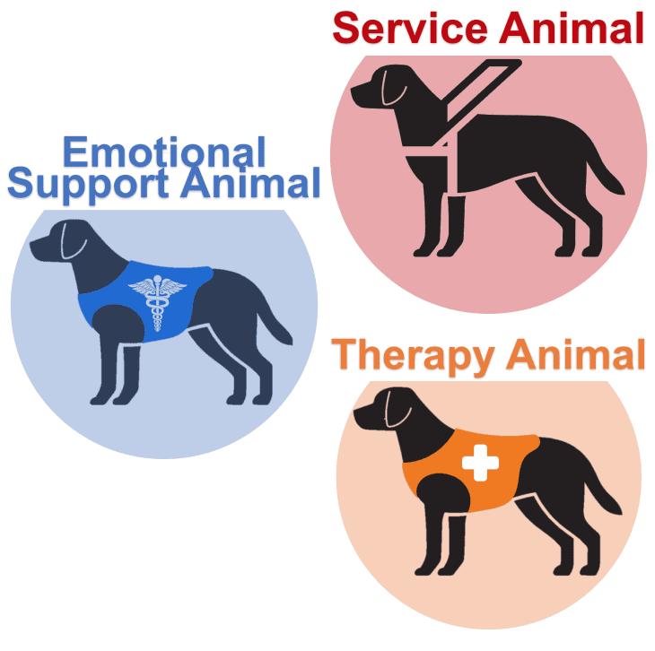

The health benefits of owning pets have been realized for years. The companionship, affection and unconditional love they provide can make owners happier and less stressed. A 2015 study in the Journal of the American Board of Family Medicine, reported that owning a pet could “decrease stress, blood pressure, anxiety levels and depression symptoms.”
When someone has an animal that helps alleviate symptoms of their mental illness, it’s referred to as an emotional support animal.
What Is an Emotional Support Animal (ESA)?
An emotional support animal (ESA) is any domesticated animal that provides a psychological and/or emotional benefit to its owner.
“If a person is about to spiral or head into a bad feeling, sometimes just holding the animal can calm them down,” Morrissette says. “Having that animal beside them can prevent them from going to a worse [mental] place.”
- Julie Morrissette, a training consultant at Service Dog Training School International, an online service dog training school.
Being officially trained is not a requirement for ESAs, but in some cases can help them better serve you, Many ESAs haven’t been trained at all—their mere presence is enough for someone to reap the psychological benefits.
ESA Dogs vs. Service Dogs vs. Therapy Dogs
The main difference between emotional support animals, service dogs and therapy dogs is their level of training, legal access to public spaces and ability to complete tasks.
The diffrence between a service dog, therapy dog and a emotional support dog. Photo From "NonProfit Mental Healthcare Provider"
Emotional support animals (ESAs): These animals mainly offer comfort and companionship to those dealing with mental health disorders. They’re not trained in tasks and don’t have the legal right to be in public spaces. ESAs are not limited to dogs; any domesticated animal, such as cats, mice, rabbits, birds, rats, miniature horses and more can be considered an ESA.
Service dogs: These are dogs trained to complete specific tasks that help their owners with their day-to-day activities. “Service dogs are almost like medicine with four legs and a tail because they’re needed to function daily,” explains Morrissette. They don’t have to be certified, and it’s against the law for someone working at a business or government facility to ask for a service dog’s documentation, as per the ADA. Additionally, service dogs are allowed by law to enter public areas.
Therapy dogs: These are dogs used for companionship and comfort, just like ESAs, except they have undergone extensive training and socialization for this purpose. You may see them used in senior centers, schools, libraries and hospitals. “A therapy dog has to have a very calm temperament…It needs to be well-trained, well-behaved, socialized and able to listen to instructions very well,” explains Morrissette.
How To Get an Emotional Support Animal
If you already live with an animal that benefits your mental health and are seeing a licensed mental health professional, you can ask them to write you an ESA letter to prove that it’s crucial to your well-being.
The process differs if you don’t currently have an animal and are looking to get one. You’ll want to select an animal that best suits your mental and emotional needs; most people select dogs. The next step will be to obtain an ESA letter from your licensed mental health professional.
An ESA letter is the only legally accepted way to prove that your pet is an emotional support animal. You must retrieve the letter from a physician or licensed mental health professional, including a therapist, psychiatrist or psychologist. The letter confirms that you’re dealing with a diagnosed mental illness and that your pet is providing you with mental and/or emotional benefits. However, there are several places where ESA letters aren’t accepted. This is because, unlike service dogs, emotional support animals aren’t protected under the Americans with Disabilities Act (ADA). It’s up to each individual business, such as restaurants and retail stores, to accept or deny your ESA.
To qualify for an emotional support animal, you must be suffering from a diagnosed mental illness or disability, such as depression, anxiety or post-traumatic stress disorder. Your licensed mental health professional or doctor must recognize that your ESA provides you with a psychological and/or emotional benefit.
Can Emotional Support Dogs Fly on Airlines?
.jpg)
A service dog on the airplane Photo From "This Dogs Life" by Alex DiStefano
Prior to 2021, emotional support animals were able to fly on airlines for free with their owner. But due to a change in the Air Carrier Access Act (ACAA), airlines are no longer required to accept ESAs. Emotional support dogs are only allowed in the cabin on most airlines if they meet the size requirements and the owner pays the pet fee.
If your ESA doesn’t meet the size requirements, it may have to fly in the plane’s cargo hold or it may not be allowed to fly at all.
Mental Health Benefits of Emotional Support Animals
There are myriad mental health benefits when it comes to emotional support animals. Here are some of the ways ESA dogs can benefit your mental health:
Ease anxiety: “Just by looking at or petting [an ESA], it can bring you back to, ‘Alright, things are OK now.’ They can change your whole mindset emotionally when you get into a bad place,” explains Morrissette.
Alleviate symptoms of depression: “Someone can be depressed and then they walk through their door and there’s their dog looking at them. That can change their whole day,” Morrissette says.
Provide support for those with PTSD: Trauma can cause people to feel on edge, anxious and hypervigilant. A dog’s comfort can help relax these symptoms.
Offer companionship to those suffering from loneliness or grief: Someone who suffers from loneliness or is dealing with grief may benefit from having companionship through an ESA.
Reduce stress levels: Having a dog by your side can help you to let go of stress. In fact, dogs have been found to reduce physical symptoms of stress such as high blood pressure and an accelerated heart rate.
Suitable Pets for Emotional Support Animal Designation
Any domesticated animal can be an emotional support animal; however, the most popular by far is dogs. Some popular dog breeds for ESAs include golden retrievers, Labrador retrievers, Cavalier King Charles spaniels, poodles and Yorkshire terriers.
Other common ESA animals include cats, pigs, birds, rabbits and miniature horses.
Understanding the Legal Aspects of Emotional Support Dogs
An ESA letter is the only legally accepted document that proves you have an emotional support animal. It’s essential to understand and be compliant with the laws regarding ESAs to keep you and your animal protected.
Housing Accommodations for People Who Use Emotional Support Dogs: Landlords cannot deny you your right to live with your ESA, even if the home is listed as “no pets allowed.” The Fair Housing Act protects your right to live with your emotional support animal as well as prohibits landlords from charging you fees associated with owning the pet, such as a pet deposit. If your request is denied, you can have your claim investigated by filing a discrimination complaint with the Department of Housing and Urban Development (HUD).
The Americans with Disabilities Act (ADA): The Americans with Disabilities Act prohibits discrimination against people with disabilities. Emotional support animals, however, are not protected under the ADA. This means they’re not considered essential service dogs and can be denied entry into any business or public space where dogs would not otherwise be permitted. Service dogs, on the other hand, are permitted public access rights under the ADA (meaning they may go wherever their owner can go).
This story has been reproduced as part of coursework for the Philip Merrill College of Journalism at the University of Maryland. It was originally published by Forbes.